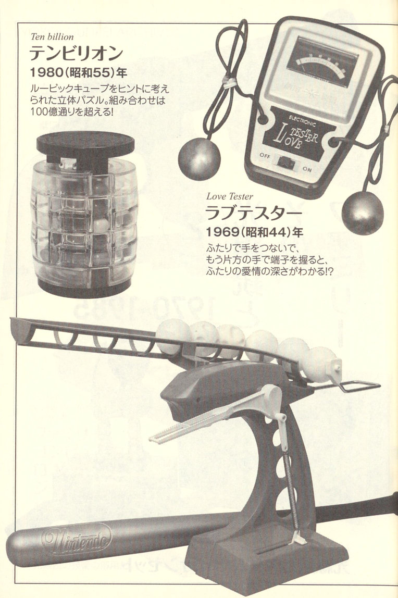
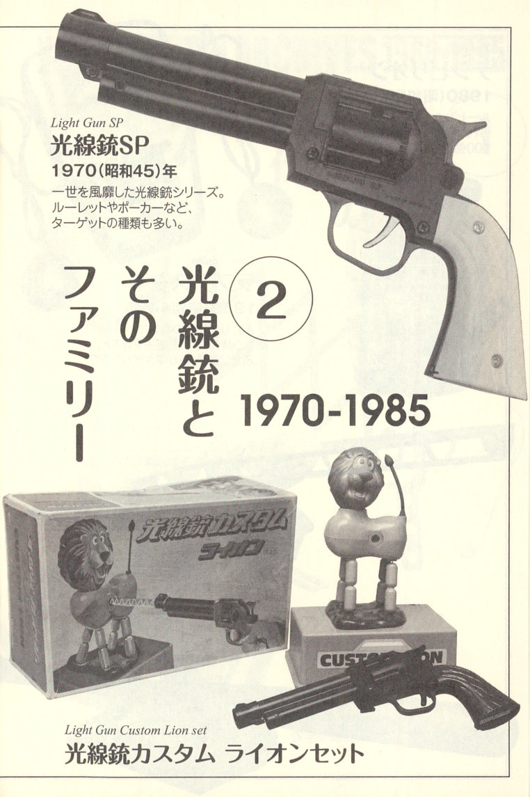
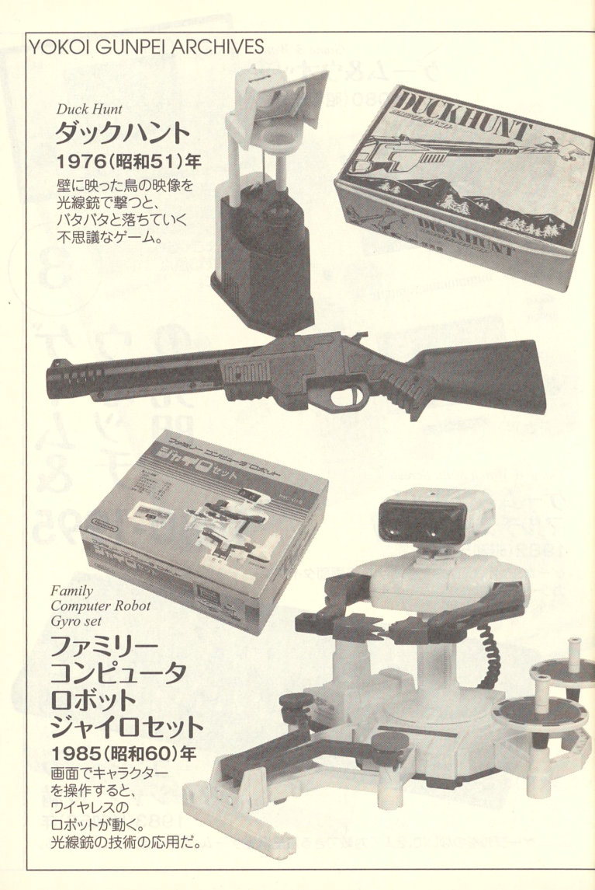
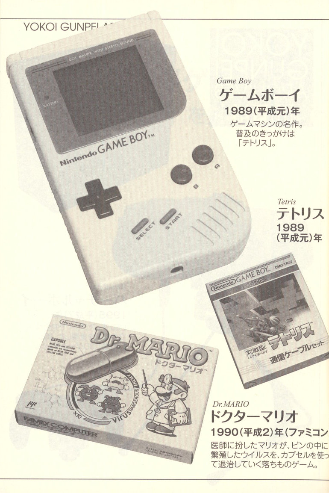

Introduction
 p.6 Preface
p.6 Preface
Takefumi Makino
This book is a paperback edition of *Gunpei Yokoi Game Kan*, first published in 1997.
Gunpei Yokoi was the former head of Nintendo's development division, and he brought numerous remarkable toys into the world. The "Ultra Trilogy" — the Ultra Hand, the Ultra Machine, and the Ultra Scope. Then the explosively popular "Light Gun Series." And beyond that, the "Love Tester," which has become a legendary toy. Every one of these was brimming with ideas uniquely Yokoi's, the kind that tickle a child's heart. That alone would be more than enough to earn him recognition, but Yokoi was not simply "a man of old toys." He went on to develop the world's first portable LCD game, the "Game & Watch." The Game & Watch became a massive hit not only in Japan but around the world, and Nintendo rose virtually overnight to become a top-tier corporation. The profits from that success were poured into what would become the "Family Computer (Famicom)." After that, Yokoi developed the "Game Boy"  p.7 — creating an environment that produced megahits like competitive Tetris and Pocket Monsters.
p.7 — creating an environment that produced megahits like competitive Tetris and Pocket Monsters.
The reason I became so captivated by Yokoi was that he was neither solely a man of analog toys nor solely a man of digital toys — he was someone who thrived in both worlds. People like that are extraordinarily rare, whether you look across the world or outside the game industry. You won't find abacus craftsmen who went on to develop computers. Salespeople who earned their orders by wearing out shoe leather and then successfully made the leap to internet marketing are vanishingly rare. Time and again, entire industries have undergone wholesale generational shifts because people simply could not cross the valley from analog to digital. And yet Yokoi strolled across that deep valley — strewn with those who had lost their footing — as casually as if he were out for a stroll, whistling to himself.
When I first heard about Yokoi from Tota Enomoto, an editor at ASCII at the time, I was instantly captivated. "I have to meet him. I have to hear what he has to say." The arrangements fell into place quickly, and I went to speak with Yokoi in person. The long interview that resulted was compiled into *Gunpei Yokoi Game Kan*.
 p.8 A Treasury of Dazzling Ideas
p.8 A Treasury of Dazzling Ideas
The contents, as you will discover, are a dazzling succession of wonders. A Light Gun made from a solar cell and a miniature light bulb. A Light Gun that emits no light. The magic of light that lets you shoot at ducks projected on a wall and actually hit them. And then there was his work with Shigeru Miyamoto on the masterpiece that gave birth to Mario — Donkey Kong. To this day, Miyamoto, a Nintendo director, refers to Yokoi as "Shisho" — "Master" — and speaks of him with deep respect. Though Yokoi had already passed from this world, it was Miyamoto who designed his gravestone. And on that gravestone, the illustration that Yokoi had specially drawn for this very book, Gunpei Yokoi Game Kan, was used.
However, the fate of Gunpei Yokoi Game Kan as a book can hardly be called fortunate. Shortly after publication, Yokoi was killed in a traffic accident. The industry saying that "you shouldn't publish an autobiographical book — it means your time is up" crossed my mind more than once.
Yet the life of Yokoi's story — so fascinating, so rich with lessons to be learned — was far from over. At Fukkan Dot Com, a reprint publisher that undertakes republication based on reader request votes, for a while  p.9 during that time, it consistently ranked near the top. However, rights issues prevented the reprint from actually being realized. On the Amazon Marketplace for used books, copies were at one point going for a staggering 80,000 yen. I thought it must be a joke, but looking at the inventory numbers, it appeared several people had actually purchased copies at that price. Then, in 2010, Film Art Inc. sorted out the complicated rights situation and reissued the book as *Gunpei Yokoi Game Kan RETURNS*. And now, Chikuma Bunko has agreed to include it in their collection. This means Yokoi's story can be passed on to future generations. I have at last fulfilled my obligation and can now visit Yokoi's grave with a clear conscience.
p.9 during that time, it consistently ranked near the top. However, rights issues prevented the reprint from actually being realized. On the Amazon Marketplace for used books, copies were at one point going for a staggering 80,000 yen. I thought it must be a joke, but looking at the inventory numbers, it appeared several people had actually purchased copies at that price. Then, in 2010, Film Art Inc. sorted out the complicated rights situation and reissued the book as *Gunpei Yokoi Game Kan RETURNS*. And now, Chikuma Bunko has agreed to include it in their collection. This means Yokoi's story can be passed on to future generations. I have at last fulfilled my obligation and can now visit Yokoi's grave with a clear conscience.
"Lateral Thinking with Seasoned Technology" — Once More
But one must not dismiss Yokoi's story as merely "behind-the-scenes tales from the game industry." Yokoi's development philosophy was something called "Lateral Thinking with Seasoned Technology." Rather than using cutting-edge technology, the idea was that by finding new applications for well-worn, familiar technology, entirely new products could be born. Today's global hit products almost without exception embody this "Lateral Thinking with Seasoned  p.10 Technology" philosophy. For example, Apple's iPhone is, technologically speaking, simply a matter of taking the Mac that Apple had long been making, shrinking it down, and adding a multitouch screen. Nintendo's DS is, technologically speaking, nothing more than a Game Boy with the screen converted to pen-touch input. You could certainly say that. And yet, they became products utterly different from their origins, capturing the hearts of people around the world. "Lateral Thinking with Seasoned Technology" teaches us: don't compete on cutting-edge technology — compete on ideas.
p.10 Technology" philosophy. For example, Apple's iPhone is, technologically speaking, simply a matter of taking the Mac that Apple had long been making, shrinking it down, and adding a multitouch screen. Nintendo's DS is, technologically speaking, nothing more than a Game Boy with the screen converted to pen-touch input. You could certainly say that. And yet, they became products utterly different from their origins, capturing the hearts of people around the world. "Lateral Thinking with Seasoned Technology" teaches us: don't compete on cutting-edge technology — compete on ideas.
In fact, this "Lateral Thinking with Seasoned Technology" was Japan's specialty back when its industries were strong. Who would have thought that an electric heater could be used to cook rice? Who would have thought that a motor could wash shirts? Who would have thought that a tiny music player that could only play back recordings would become a worldwide sensation? Japan rose to become an industrial powerhouse through "Lateral Thinking with Seasoned Technology." And yet, recently Japan has been trying to sell itself on "high quality, high performance, advanced cutting-edge technology" — but as the example of "Galapagos" cell phones shows, the contradictions are plain to see. Meanwhile, Samsung Electronics in South Korea has made air conditioners with a mosquito-repelling function a huge hit in Thailand. China's Haier has turned a "washing machine that can also wash potatoes" into a huge hit in China. Japan's signature strengths are being claimed by its Asian competitors. Of course, advanced technology and high quality are important.
 p.11 Yet when it comes to ideas, haven't we fallen behind? It doesn't have to be anything as grand as true originality — just take a small idea and run with it. Hasn't that spirit of "let's just give it a try" been lost? Within "Lateral Thinking with Seasoned Technology," so many of those hints await.
p.11 Yet when it comes to ideas, haven't we fallen behind? It doesn't have to be anything as grand as true originality — just take a small idea and run with it. Hasn't that spirit of "let's just give it a try" been lost? Within "Lateral Thinking with Seasoned Technology," so many of those hints await.
Twenty years have passed since I interviewed Yokoi. And yet, his words have not grown old. Far from it — when I reread them, I realized they had come full circle and felt fresher than ever before. Perhaps we have only now, at long last, caught up to Gunpei Yokoi.
 p.15 YOKOI GUNPEI ARCHIVES 1966-1995
p.15 YOKOI GUNPEI ARCHIVES 1966-1995
1966-1980 The Age of Idea Toys 1
Ultra Hand
1966 (Showa 41)
A simulation of a mechanical arm. Its simple extending and retracting mechanism proved popular and made it a hit.
Ultra Machine
1968 (Showa 43)
A pitching machine for children. It generated buzz at launch with flashy promotional efforts, including television commercials.
[IMAGE: Ultra Hand]
[IMAGE: Ultra Machine product box]

p.16 Ten Billion
1980 (Showa 55)
A three-dimensional puzzle inspired by the Rubik's Cube, with more than ten billion possible combinations!
Love Tester
1969 (Showa 44)
Two people hold hands, and each grips a terminal with their free hand — and you can find out how deep their love is!?
[IMAGE: Ten Billion puzzle]
[IMAGE: Love Tester]
[IMAGE: Ultra Machine]

p.17 Light Gun SP
1970 (Showa 45)
The Light Gun series that took the world by storm. There were many types of targets, including roulette, poker, and more.
2 The Light Gun and Its Family 1970–1985
Light Gun Custom Lion Set
[IMAGE: Light Gun SP]
[IMAGE: Light Gun Custom Lion Set]

p.18 Duck Hunt
1976 (Showa 51)
A remarkable game in which you shoot at the image of a bird projected on a wall using the Light Gun, and it flutters and falls.
Family Computer Robot Gyro Set
1985 (Showa 60)
When you control a character on screen, a wireless robot moves in response. An application of Light Gun technology.
[IMAGE: Duck Hunt game]
[IMAGE: Light Gun rifle]
[IMAGE: Family Computer Robot Gyro Set]
 p.19 Game & Watch
p.19 Game & Watch
1980 (Showa 55)
The world's first handheld LCD game machine. Mini Tetris, Tamagotchi — the origin of all of them can be traced back here.
3 The Invention of Game & Watch 1980–1995
Game & Watch Multi Screen
1982 (Showa 57)
Game & Watch continued to evolve, giving rise to dual-screen models, color models, and more in rapid succession.
Computer Mahjong Yakuman
1983 (Showa 58)
An LCD mahjong game that let two players compete by connecting a cable. It was a forerunner of communication functionality.
[IMAGE: Game & Watch Ball and Oil Panic]
[IMAGE: Game & Watch Multi Screen]
[IMAGE: Computer Mahjong Yakuman]

p.20 Game Boy
1989 (Heisei 1)
A masterpiece among game machines. It was Tetris that drove its widespread adoption.
Tetris
1989 (Heisei 1)
Dr. Mario
1990 (Heisei 2) (Famicom)
A falling-piece game in which Mario, dressed as a doctor, uses capsules to eliminate viruses that have multiplied inside a bottle.
[IMAGE: Game Boy with Tetris and Dr. Mario]
 p.21 YOKOI GUNPEI ARCHIVES 1966-1995
p.21 YOKOI GUNPEI ARCHIVES 1966-1995
Virtual Boy
1995 (Heisei 7)
A 3D game machine born from a novel concept, using an LED display to achieve a complete three-dimensional space.
[IMAGE: Virtual Boy with retail box]